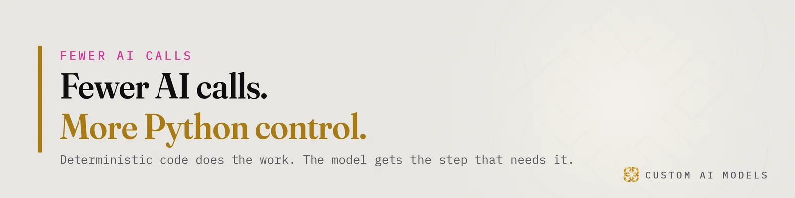
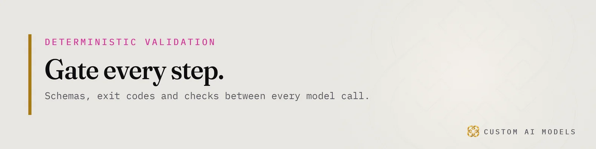
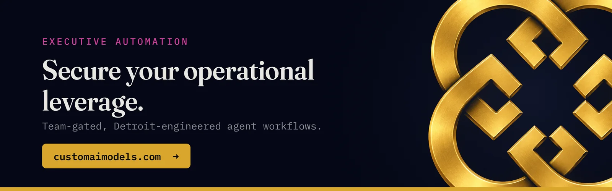

Custom AI Models
Custom AI Models Yeriko Vargas · Founder, Custom AI Models · Oct 2026
Yeriko Vargas · Founder, Custom AI Models · Oct 2026SaaS and AI automation: a couple of lines, and the work is done
Here is the shift in one sentence. A person writes a couple of lines of plain text, and the work happens.
No dashboard. No seven-step wizard. No ticket to the person who knows which button to press. The text is the interface, and the job runs behind it.
That is a problem for any SaaS company whose product is a set of screens that humans click through. If the customer can describe the outcome and skip the screens, the screens stop being the product.
It is also an opening. The companies that own the data, the permissions and the rules can be the ones that make those few lines safe to run. Most of them are not ready. The reason is not the model.

The model is a commodity. Your data infrastructure is not.
Every competitor can rent the same model you can. That part of the stack will not differentiate anyone. What differentiates is what sits underneath it.
The order never changes: unify the data, model it, gate every step, and put the model last. Most SaaS teams do it backwards. They bolt an assistant onto a product whose data lives in six places, with three definitions of a customer and no agreed source of truth.
Then they demo it. It works on the clean example. It breaks on the real one, and nobody can say why, because nothing was measuring anything.
We saw the same pattern on the infrastructure side. In what replacing four spreadsheets actually took, the model was never the hard part. Registration, retention and who is allowed to see what took the time. A SaaS product has the same problems at larger scale, and customers will pay for the vendor that has already solved them.
Dirty data under an assistant is not a quality issue. It is a legal and financial liability. An agent that acts on a wrong record does not just give a bad answer. It sends the email, updates the invoice, or closes the account.
Deterministic AI workflows are what make a few lines safe
A language model is non-deterministic. Ask twice, get two answers. That is fine for a draft. It is not fine for work that touches money, records or customers.
So the engineering job is to wrap the unpredictable part in predictable parts. We call it deterministic validation. The model proposes. Code checks. Only what passes moves on.
In practice that is plain, unglamorous work:
- JSON schemas that reject malformed output before anything reads it
- Exit codes that stop a pipeline instead of letting it limp on
- Webhooks and SQL as the real actions, with the model nowhere near the write path
- A second check on anything that might quietly do good work or bad work
We run this pattern across a dozen tools from plain Python. Twelve tools, one Python pipeline covers it. The rule is simple: every model call is a claim until a check proves it.
This is the gap between a demo and a product. The demo has a model. The product has the gates.

AI agents need RBAC, telemetry and a gate on every step
Once the work is automated, the questions change. They stop being "can it do the task?" and become "who asked for it, what was it allowed to touch, and how do we know it did the right thing?"
Three things have to exist before any agent runs customer work.
RBAC comes first. An agent inherits the permissions of whoever invoked it, or less. Never more. Most SaaS permission models were built for humans clicking screens. They were not built for a process that acts in bulk, at speed, on text it half understood.
Telemetry comes second. If you cannot see every step an agent took, you cannot debug it, bill it, or defend it. Logs are not enough. You need structured traces you can query.
Data drift checks come third. The inputs change. Customers change how they write. Upstream systems change their formats. A workflow that passed last quarter can fail quietly this one, and without evaluation running continuously you find out from a complaint.
The same lesson shows up in retrieval. In RAG isn't a feature. It's an architecture., the point is that a production system lives or dies on the telemetry and evaluation wrapped around it, not the prompt at its center. That holds for every agent a SaaS company ships.
What SaaS teams should build before the next demo
If your customers are going to describe work in a couple of lines, the competitive question is who they trust to run it. Here is what we would build first, in order.
- One source of truth. Unify the data before any assistant touches it. Decide what a customer, an order and an account mean, once.
- Permissions at the action level. Not "can see this page." Can this process, for this person, write this record.
- Gates between steps. Schema checks, rule checks, a second reviewer for anything irreversible.
- Evaluation that never stops. Measure outputs against known cases on a schedule, and alert when they slip.
- The model last. Swap it freely. If swapping it breaks the product, the architecture is wrong.
None of this is exciting. That is the point. The exciting part is the customer typing two lines and watching the work finish. The unexciting part is why it finished correctly.
If you have tried a demo and watched it break, you already know which half was missing.
Eight and a half years in data taught one thing: the tools changed four times, and the job never did. We wrote that up in From statistics to LLMs: the same job, different tools. Automation by text is the newest tool. The job is still making sure the answer is right before anyone acts on it.
The future of SaaS belongs to whoever owns the validation layer
Some SaaS products will be replaced by a few lines of text and a script. The ones that survive will not be the ones with the best interface. They will be the ones that hold the data, enforce the permissions, and can prove every automated step was checked.
That is a defensible position because it cannot be copied with a prompt. It takes years of data engineering, a real telemetry layer, and the discipline to put a gate where a shortcut was easier.
Custom AI Models has built this way since 2022. The work is the same each time: unify the data, model it, gate every step, and put the model last. The model is the part you can rent. The rest is your company.
